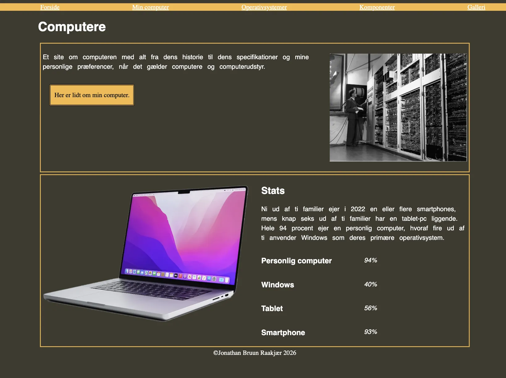

T02 - WEB
MMD FORÅR 2026Løsning
I tema 2 udviklede jeg min første hjemmeside ved hjælp af HTML og CSS. Opgaven bestod af studiestartsprøven samt en Mobile First-version af samme hjemmeside. Her arbejdede jeg med layout, farver, typografi og responsivt design. Jeg arbejdede også ud fra et udleveret wireframe for første gang.
Se projektet her ↓
MIT PROJEKT
Proces
Jeg begyndte med at opbygge hjemmesidens struktur i HTML og anvendte derefter CSS til styling. Undervejs arbejdede jeg med Grid-layouts og lærte at tilpasse designet til forskellige skærmstørrelser gennem Mobile First-princippet.
Reflektion
Tema 2 var min første introduktion til kodning i HTML og CSS. I starten virkede det udfordrende at forstå, hvordan kode kunne omsættes til et visuelt design på en hjemmeside. Efterhånden begyndte jeg dog at forstå sammenhængen mellem struktur og styling, og jeg oplevede en stor tilfredsstillelse ved selv at kunne bygge en hjemmeside fra bunden. Arbejdet med Mobile First lærte mig, hvor vigtigt det er at tænke brugeroplevelsen på tværs af forskellige enheder. Jeg blev opmærksom på, at et godt design ikke kun handler om udseende, men også om funktionalitet og tilgængelighed. Temaet gav mig et stærkt fundament inden for webudvikling, som jeg senere har bygget videre på i de øvrige projekter.